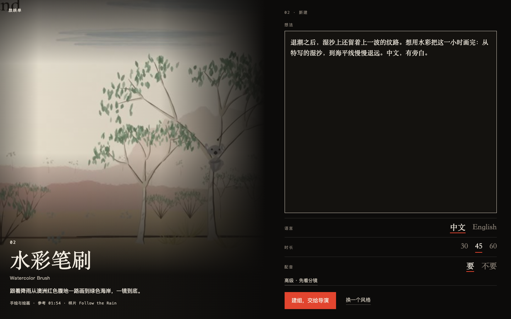
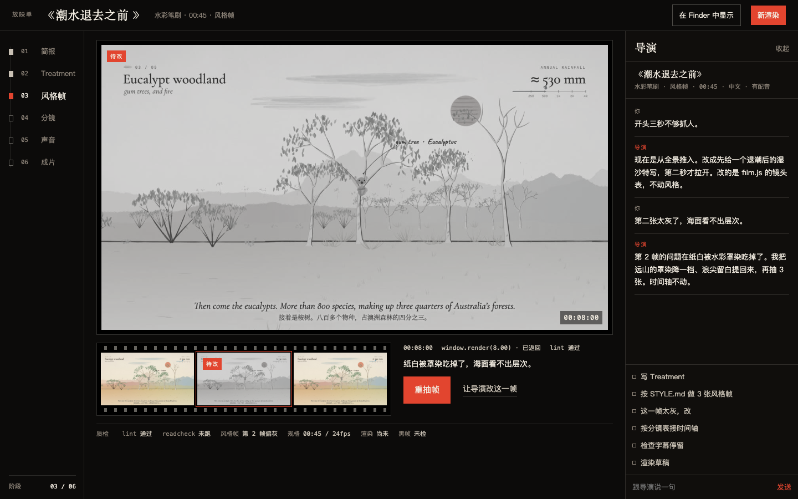
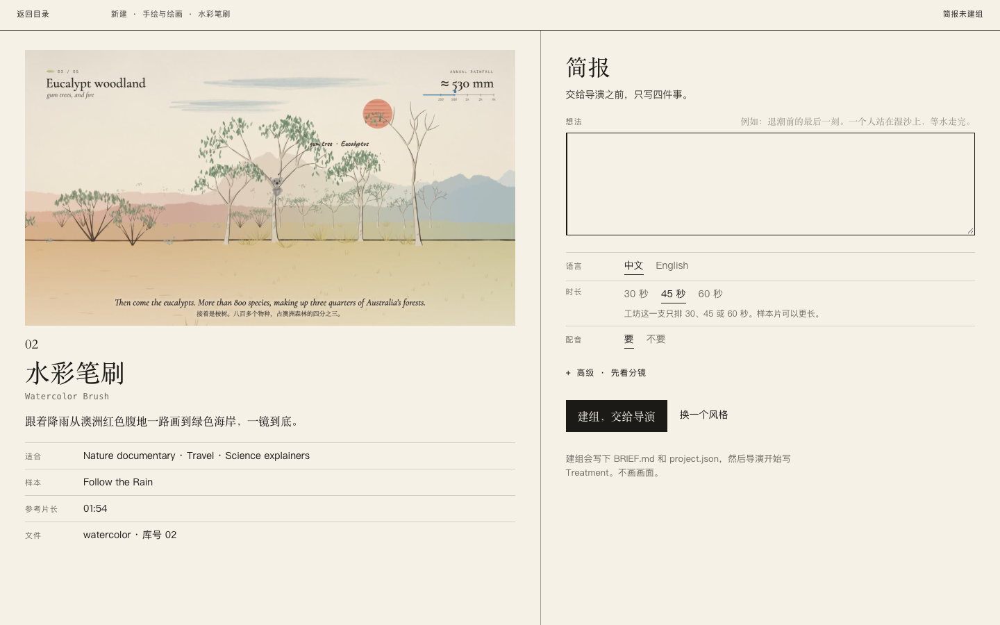
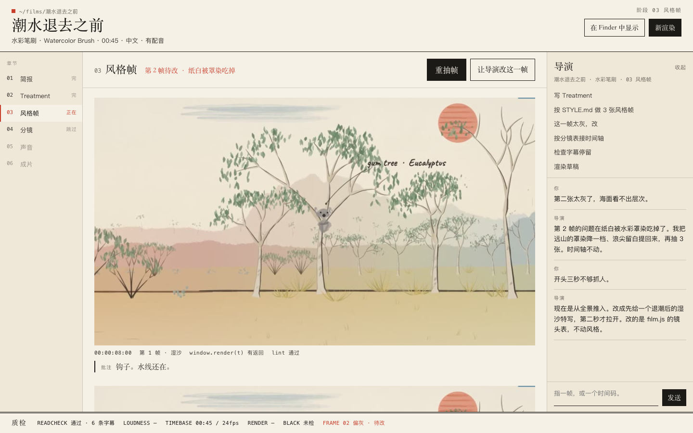
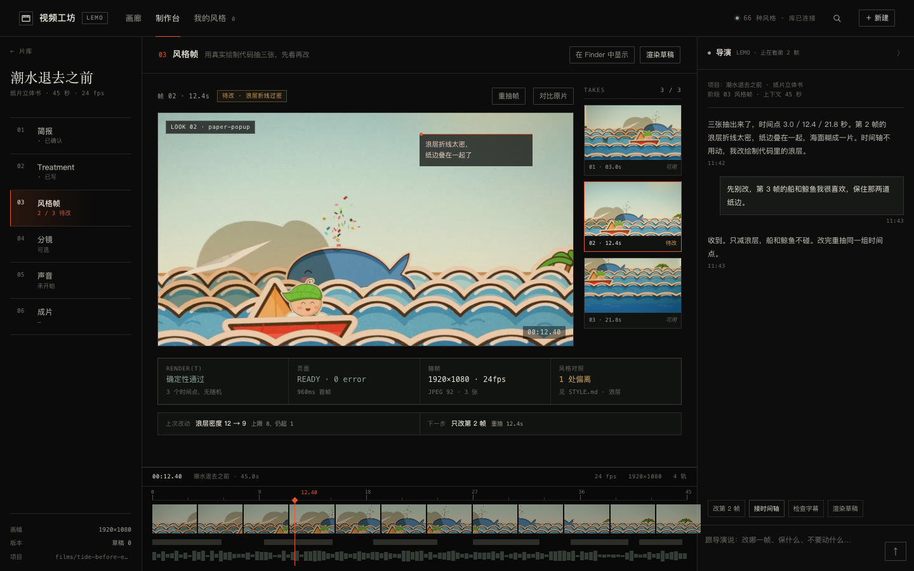
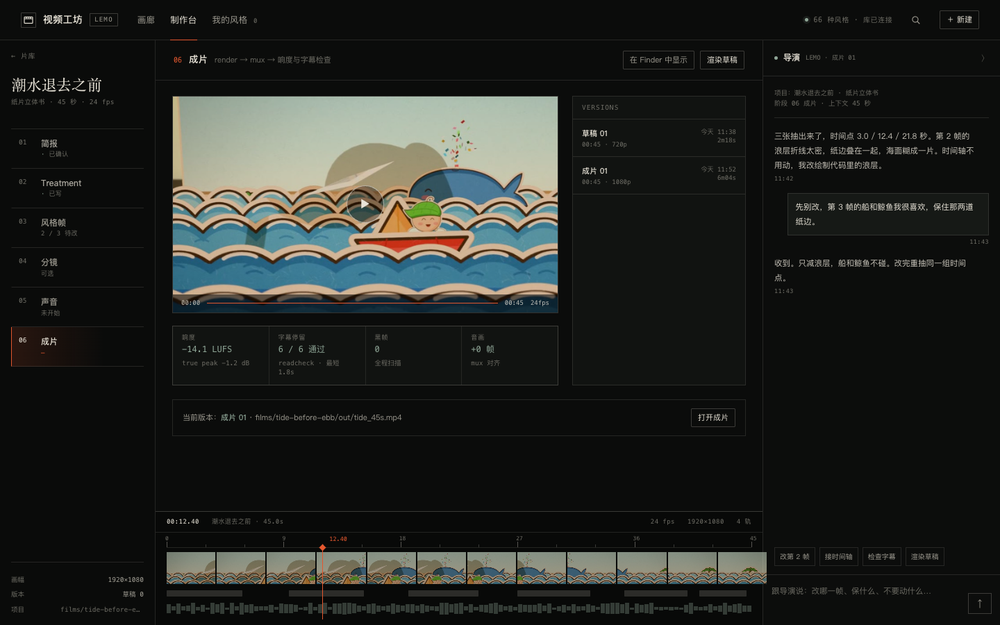

01 REBUILD, NOT RESKIN
视频工坊，
重做。
旧的 HyperFrames 模板、小说分镜、Remotion/Warm、墨金/纸页/霓虹主题全部拆掉。新工坊只做 Lemo-Opuscar：66 种代码绘制的风格，真人导演 Agent 写片，工坊负责选风格、看帧、检查、渲染。
已选定 · A 暗房放映厅
已实现进插件：A 的画廊/放映间 + B 的版本表/页脚质检 + C 的抽帧审查。B、C 留作参考。


GALLERY / NEW / DESKA · 044
A · 已选BY GROK 4.7 · HIGH
暗房放映厅
“海报在灯上，想法交给导演。”
最电影的一版。画廊像电影节节目册，制作台像放映间：一整块画面、下面的 takes 像胶片齿孔、右侧导演按帧说话。它把「选风格」做成了一件有仪式感的事。
- 最强的地方：海报的灯箱感、放映单、成片页的版本表（−14.1 LUFS / 2 分 18 秒）。
- 要接受的代价：66 种风格按大图纵向排，找人比 C 慢；制作台的信息密度偏低。
- 适合：把工坊当作品集和放映空间，每次只做一支片。
打开 A 的可点稿 →
DARK · CINEMASONGTI / MONO朱红 #E2452F


CATALOG / BRIEF / DESKB · 061
BBY GROK 4.7 · HIGH
纸本片场
“像一本拍摄档案，不像一块仪表盘。”
最印刷的一版。纸白、墨黑、一个朱红，画廊是带编号的影片目录，制作台是拍摄档案：阶段是章节，图版旁边是批注，质检像盖章。它把「做片」做成一份可以归档的文件。
- 最强的地方：图版目录、页脚双线质检、版本表；第 2 帧可以 lint 通过但同时写着「待改」。
- 要接受的代价：浅色长时工作不如暗色沉浸；海报要靠在纸白上的版式撑，不能靠黑底发光。
- 适合：喜欢把每支片的过程、依据和版本都留成档案的人。
打开 B 的可点稿 →
PAPER · LEDGERSONGTI / MONO朱红 #C8402C


GALLERY / LOOK / FILMC · 022
CBY DEEPSEEK · 本机
调度台
“主帧、takes、时间轴、导演，同屏。”
最工具的一版。画廊仍然是海报，但制作台是控制台：主帧 + 三张 takes + 质检数字 + 一条真时间轴。它把「做到一半」的掌控感放在第一位，每一步都能看出这一版能不能交。
- 最强的地方：抽帧审查、时间轴、质检和版本在同一个屏幕；1280 宽也不挤。
- 要接受的代价：画廊的仪式感弱于 A，单片沉浸感弱于 A；更像专业工具。
- 适合：一天做几支片、要反复抽帧和比对版本的人。
打开 C 的可点稿 →
GRAPHITE · DESKSONGTI / MONO朱红 #E4572E
怎么选
别看配色，看你想在工坊里待多久、待在哪。
- 如果你更在意「打开就想选一个风格」——选 A。
- 如果你更在意「每支片的过程都能归档、能翻」——选 B。
- 如果你更在意「做到一半时，一眼知道哪一帧不对、哪一版能交」——选 C。
选定之后
我会把选中的一版做成真的 DSH 插件：真实 Lemo 风格库、真实抽帧、真实渲染、真实导演会话。另外两版里更好的零件（A 的成片版本表、B 的批注、C 的时间轴）会并进去。
然后删掉旧插件和旧工程，用一支 30–45 秒的样片跑通整条管线。